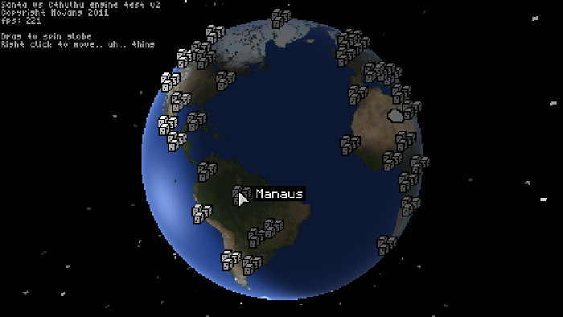
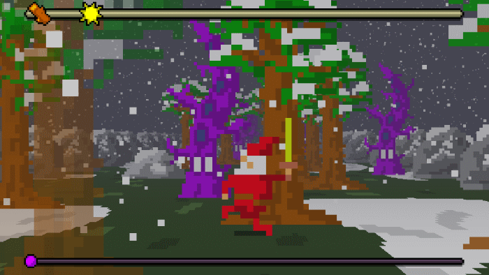

We archive every piece of content Notch left behind him on the internet: games, music, websites, etc.. Here, you'll find
everything we currently have archived. Everything is sorted by year of creation, but the best way to search is by using
your browser's search tool.
Keep in mind that this section is still under construction.
Quick Navigation
[ 1980s | 1990s | 2001 | 2002 | 2003 | 2004 | 2005 | 2006 | King.com | 2007 | 2008 | 2009 | Around 2009 | 2010 | 2011 | 2012
| 2013 | 2014 ]
1980s
According to an interview, Markus Persson started coding at the age of 7 - that was around 1986 or 1987.
Notch's first game was a "very basic text adventure" he made at the age of eight, 1987 or 1988. It is currently
unknown if any of these games or notch's first Commodore 128 are still with Notch or his parents.
1990s
BitSeven Productions was Notch's first "studio", under which he created the earliest
known games. He shared screenshots and some basic info about the games in an interview in 2011. All BitSeven games
were created for DOS using the Turbo Pascal integrated development environment. None of these games are archived, they
were never shared in the first place. All you can do is check out the screenshots, with original descriptions written
by Notch!

2001
TheIntraClinic.com was a website which Notch started around this time. It featured games, music
and other interesting things, which are all currently lost to time. The website stopped being paid for in 2009, and
now it serves as an archive on Notch's games.

Legend of the Chambered is the oldest known game released on The IntraClinic in July 2001, and
is also the first game of this title. It was a first person dungeon romp, similar to games like Dungeon Master - in
the form of a java applet. It started as an experimental engine for this type of games, but Notch liked working on it
so he kept expanding it for a while. Multiple versions were released, however none is currrently archived.

SiteApplet was an applet that would load if you entered the website. It was most likely an animated logo of The
IntraClinic.
Droj was a multiplayer game hosted on Notch's computer. Nothing is known about Droj, as
it is currently lost and the archived site doesn't contain much information.
2002
Dachon B was a multiplayer j3D gravity thruster type game with collision detection, a console and a sound engine. It
was being worked on around the same time as Stark, and released around May 2002. Development was cancelled due to
Notch realizing j3D being too slow to make anything "real" in. The game alongside a screenshot is currently lost.
Here's the original post on the jvm-gaming
forums.
Stark was a j3D 2.5 dimensional graphics engine, whose main functionality as loading DOOM WADs.
It was being developed around the same time as Dachon B, and it released around May. Almost all DOOM levels rendered
perfectly, except the sky in DOOM 2 levels. Notch lost interest and abandoned the project after having an issue with
sprite rendering. He also later released the source code. Only the website is currently archived, making the game
itself, the j3D version and the source code lost.
Here's a mention about it on the jvm-gaming
forums.

Untitled Re-coloring Project - Notch was messing with images and coloring techniques.

2003
WURM Online is an MMO RPG that Notch worked on with Rolf Jansson, who founded Mojang AB together.
Development started sometime in 2003. Notch was developing the game's client until 2007, when he left the company,
which later changed it's name. There is a lot more about Wurm, check out the dedicated page.

Mojang's SiteApplet was an applet that would load if you entered the Mojang website. There was a
big C-shaped “Mojang Specifications” logo, and when you clicked it, it split into four half-sized logos that bounce
apart a little. When you clicked any of them, they again split and bounced apart. After the 5th split the parts
vanished after bouncing.
Here's a post about it on jvm-gaming.
2004
There are no known projects other than Wurm, that notch worked on during this year.

2005
SonicRacer4k is the first time Notch attempted to join the 4k
Java
Competition in January 2005. It is a Sonic game with "stolen sprites". Some of the code is based on Stark. You can read the original thread here. It later mutated into a voxel game engine, as said
here. Notch forgot to make a backup of the racer source
code, so he abandoned it.
Download the jar here, run it by "java -cp SonicRacer4K.jar A
window".

Dungeon4k a game for the j4k competition, created in January 2005.
Download the jar here, run it by "java -cp Dungeon4k.jar D window".

Hunters4k is another game for the j4k competition.
Download the jar here, run it by "java -cp Hunters4k.jar D window".

Miners4k is a game made for the 2006 j4k competition. The goal is to lead all the
miners to the gold. It was released in December 2006. Original
thread. It had multiple versions.
Download the jar here, run it by "java -cp miners4k.jar A".

Pixler was a flash application, unknown what it did. It is currently lost.
2006
joXSI was a free, open source .xsi file importer for java. The goal was to have joXSI support
everything in the xsi file format, including inverse kinematics and skinned animation. It was developed around
January 2006.

Dachon4k was made for the 2006 j4k competition, it was a game similar to Dachon B, but
singleplayer and in 4kb. This game is currently lost.

Logichex is a combination of hexagons and logic gates. You can even build a very simple
computer with it. It had two versions.

Super Mario Whee/Infinite Mario Bros was a game made for a mario themed competition.

"Brainf*ck to Java compiler" was exactly what the name says. You can read more about it in the original
thread.
"Java assembler" was notch's own custom Java assembler. You can read more about it in the
original thread.
King Games
Notch used to work for King.com as a game developer in ActionScript. The games he worked on were released from 2005 to
2009, when he left the company. These games are currently not on our site.
If we ever find out when these were made, they will be properly sorted.
Funnyfarm
Luxor
Zuma
Pinball King
Duck Pond Dash
Carnival Shootout
2007
L4krits is a demake of Luxor, a game made by Notch for King.com.

t4kns was notch's entry for this year's j4k competition.

Takns was the finished version of t4kns.
2008
Rubylands was an online fantasy RPG manager.
Blast Passage.

TowerFail was a failed attempt at LD12.

Breaking the Tower was Notch's entry for Ludum Dare 12.

Left4kDead is a zombie shooter game. We also have a dev version archived - here.

Legend of the Chambered is another dungeon crawler, this is the well known version of it.

TinyCham is a 40x30 EGA dungeon crawler prototype.

Eye of the Onlooker II - The Legend of Tinymoon is a more finished version of TinyCham. It is
currently lost.

Road is an unfinished Ludum Dare 13 racing game.

2009
Meg4kman is a Megaman game created for the j4k competition.
Bunny Press is a puzzle game created for Ludum Dare.

Muh is a rythm game in the style of C64.

Legend of the Chambered 2 was a never finished sequel.
It was initially witheld from public release, however Notch announced on May
03, 2009 on the
TigSource Forums that the work-in-progress game was now available to play
on the Mojang website as an applet, mentioning that he had made the game "a
while back".
RubyDung was a level generator prototype, later mutated into Minecraft.
Zombie Town was a GTA Chinatown like renderer, featuring the Steve model from Minecraft. It is not known to have
released, thus it is lost.
City was an engine and walking test with walls. It is currently lost.
Minecraft is a popular block building game.
Minecraft4k is a j4k competition Minecraft demake. An older version is also available.
Left4kDead 2 is a sequel to Left4kDead, it was mainly made as a joke on how L4D 2 was almost
the same game as the first one.
The Europa Arcology Incident is a game for the Ludum Dare 16 competition.
Unknown release years from around this time
Flashmaze is a flash FPS prototype. It uses sprites from a DOOM mod.
HL2RPG is a Java Dungeon Master like prototype which uses HL2 assets.
3dck_d0 is a DOOM level renderer in Flash.
Legend of the Chambered (Flash) is a prototype dungeon crawler made in Flash.
2010
VVVV is a game for the Ludum Dare 16 competition.
TinyGame 2010 Color Test Dithering color palette test.
Legend of the Chambered - Book 1 was a game idea for TinyGame 2010, probably never started working on it.
The Tiny Vikings was a never finished game for TinyGame2010.

Metagun is a platformer game.
Launch is a game for the 2010 Bigjam competition.
Her is another game for the 2010 Bigjam competition. This game seems to be broken.
Anttack is a game for the 2010 Tigjam competition. The theme was insects. This game is
currently lost.
Sunshine Bubbles is another game for the 2010 Tigjam competition. The themes were
sunshine and bubbles. This game is currently lost.
CatRace is yet another game for the 2010 Tigjam competition. The game was probably about
a racing cat. This game is currently lost.
15m is yet another game for the 2010 Tigjam competition. Unknown what the game was about. It
is currently lost.
Legend of the Chambered (Ludum Dare version) is another version of the well known LoC game. This
one was made for the Ludum Dare 19 competition. There were 4 released versions, only the first three are found:
Version 1, Version 2,
Version 3, and there's also an Android version.
Super Me4k Boy was a never released j4k game prototype.
2011
Prelude of the Chambered is an entry for the Ludum Dare 21 game jam.
Minicraft is a game for the Ludum Dare 22 competition.
Santa vs Cthulhu is an unfinished game engine. The archived version is an early test Notch
shared.

BrickCraft/Project Rex Kwon Do was a never finished LEGO game made by Mojang.
Minitale was a never finished sequel to Minicraft.
2012
0x10c was a never finished first person shooter space game.
One of the interesting aspects of the game is that it included an in-game
emulated computer referred to as the DCPU-16. While the game was never released officially, there is a leaked very
early version available here
(keep in mind it is nowhere close to being the final game).
There was also a facebuilder
application made in Unity by Eldrone, who was the artist for
the game.
DCPU-16 is the virtual computer from 0x10c mentioned above. Notch even released proper documentation for
it.
Herp Fortress is a TF2 demake Notch made while working on 0x10c. He only
released the source code.
2013
Drop is speed-typing game made with Unity.
Shambles is a first person shooter made for the 7DFPS game competition. It was made with Unity.
Last Minute Christmas Chopping is a game for the Ludum Dare 28 competition.

2014
Drowning in Problems is game for the Ludum Dare 29 competition.

Cliffhorse is a game about a horse that runs over cliffs! Isn't that exciting?! =)